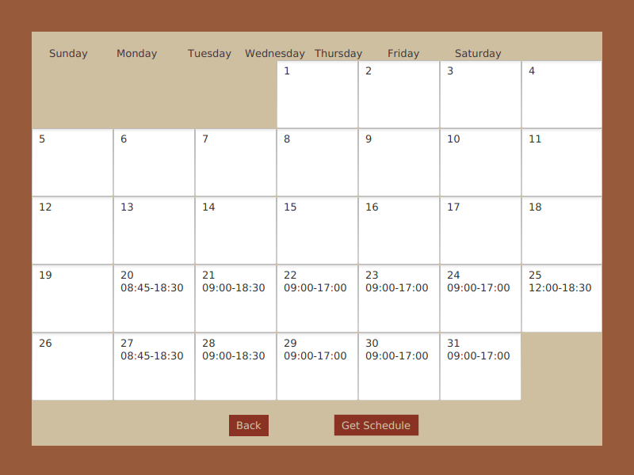
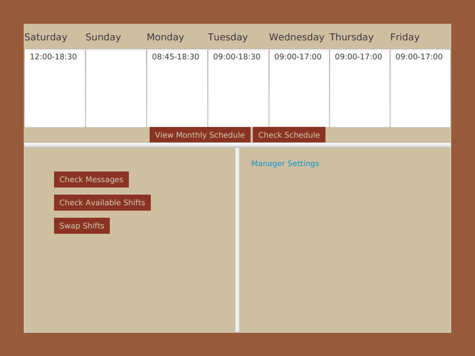
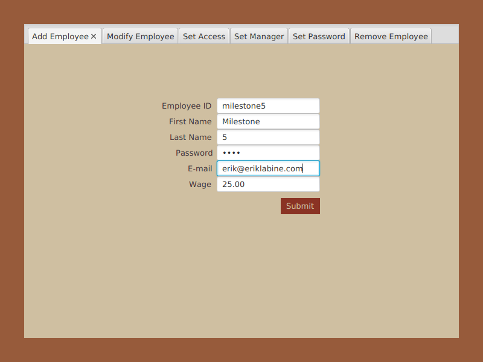
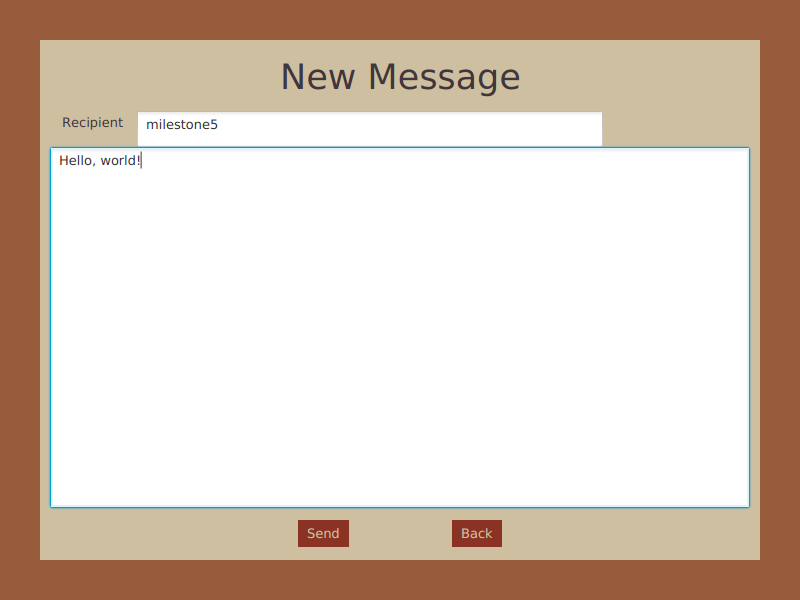
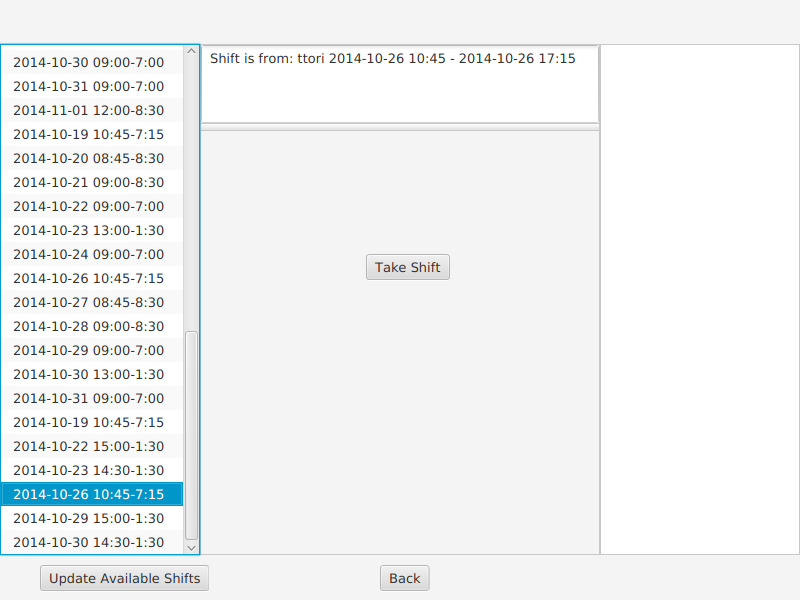

Shift Swap User Guide
Welcome to Shift Swap, the employee communication and management tool from Agile Technologies.
If you are new to Shift Swap, please check Getting Started. Other pages currently available include a run-down of most major features, installing, and Manager Settings.
For the Marker
To run the file, you will require Java 8.
You can login using the username/password combation tmike and doge. Once this is done you'll be on the front page.
Success Scenario 1: Check Monthly Schedule
Click on the View Monthly Schedule button
Click on the Get Schedule button; this will bring up your schedule for the current calendar month.
-
The sceen should now appear like this:
 You have successfully checked a schedule. Click Back to proceed.
Success Scenario 2: Check Weekly Schedule
Click on the Check Schedule button; this will bring up your schedule for the next 7 days.
-
The sceen should now appear like this:

Success Scenario 3: Add Employee
Click on the Manager Settings link.
-
Enter some information. It doesn't particularly matter what you put so long as you remember the Employee ID and password, and the Wage is a floating point number.
 You have now added a new employee. You can verify this by quitting the application, re-launching, and logging in with the credentials you just provided.
Success Scenario 4: Send a Message
While still logged in to this new account, click Check Messages
Your inbox should be empty since you are a new employee. Click Create New Message.
-
Set the recipient to your Employee ID. Enter anything you like for the message itself. Click Send.
 Now click Back. Then, click Update Inbox to verify you have received the message from yourself. Once you have verified this, click Back to proceed.
Success Scenario 5: Take a Shift
Checking your weekly schedule will confirm that this new account has no upcoming shifts.
-
Click Check Available Shifts. Click Update Available Shifts and then select one after the date 2014-10-25. Then, click Take Shift
 Now click Back. Then, click Check Schedule to verify that you have successfully acquired the new shift.
Future Plans
In the future, we hope to add more shift-trade functionality (You can see the skeleton of the "Swap Shift" page, which will allow you to give a user one of your shifts in exchange for taking on of theirs). As you can see, there is a lot of UX work to do yet, which will be a big priority. Overall stability and security can also be improved.
For Milestone 6 we also plan on allowing this to be run as a web applet accessible by any standard web browser. This will improve not only accessibility, but also overall speed of execution.
Finally, we hope to add more features for the owner of a business running Shift Swap to fully customize the software to their business needs, using a menu to configure things like date formats, maximum hours an employee can work, etc.